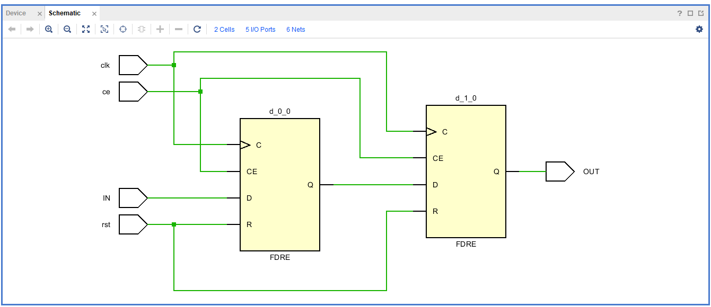
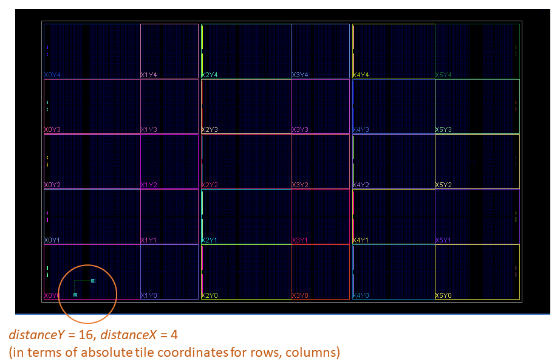
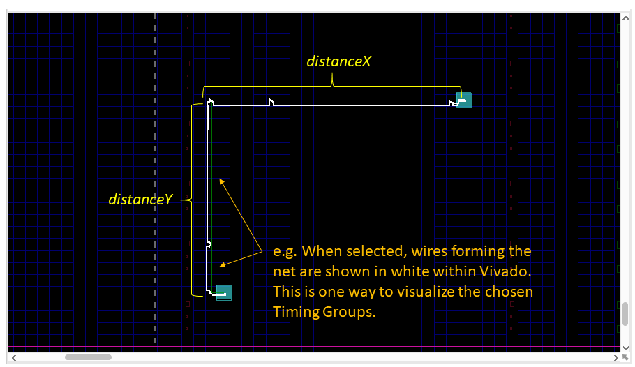

RapidWright PipelineGeneratorWithRouting Example¶
As part of the introduction of our new RapidWright timing library, we have extended the Pipeline Generator tutorial to demonstrate how to use our timing library, or at least how one might call our new timing library towards implementing a timing-driven router.
Background¶
Please see our FPT‘19 paper, "An Open-source Lightweight
Timing Model for RapidWright"
(Presentation)
for background details on our RapidWright Timing Model. Our model abstracts groups of low level wires and MUXes into an abstraction that we call timing groups (TGs).
Please note this tutorial does not cover some deeper background details, and it assumes a basic knowledge of routing concepts and the routing resources available within Xilinx devices. For more background, the tutorial library contains a separate tutorial dedicated on routing, including implementation examples that are depth-based (non-timing driven). That tutorial includes some device model details specific to RapidWright. RapidWright also provides an even more substantial depth-based router implementation within its source library (at least more substantial than the dedicated tutorial).
In this tutorial we further model our router cost function to compare the net delays estimated for different paths as a component of the cost. However, our cost function, algorithm, and overall implementation are for illustration purposes and have not been optimized for runtime performance or modular design. Our goal here is merely to present an example of using our timing library for exploring potential routing resources.
This tutorial and router method are provided in Java, as we are leveraging the circuit generator from the earlier Pipeline Generator tutorial. In the Pipeline Generator tutorial, we describe a circuit generator that instantiates and connects a 2-D array of flip flops, which represent an n-bit wide bus pipelined over multiple clock cycles. For this tutorial, we consider and generate a one-bit wide bus over two cycles (essentially we connect only a pair of flops). The more interesting aspect is that our pipeline generator has parameters for placement allowing the user to select the distance between flops and a relative direction.
Steps to Run¶
Ensure you are familiar with the RapidWright directories and have an IDE project created for RapidWright. Using an IDE such as IntelliJ or Eclipse is highly recommended for exercises in this tutorial for easy compilation and for help with the RapidWright libraries and functions.
If you need to recompile the code, run:
javac src/com/xilinx/rapidwright/examples/PipelineGeneratorWithRouting.java
from within your RapidWright directory. Alternatively, build this example using your IDE.
After compiling, run:
java com.xilinx.rapidwright.examples.PipelineGeneratorWithRouting
This will generate an output called pipeline.dcp, containing the placed and routed circuit design.
To see a list of available input options specify “-h” as an argument. Note: the source code for this example is located in: RapidWright/src/com/xilinx/rapidwright/examples/PipelineGeneratorWithRouting.java.
Example Design¶
Width = 1 bit
Depth = 2 pipeline stages
DistanceY = 16 tiles
DistanceX = 4 tiles
The logical view of the circuit as a Vivado schematic is shown below (pair of flops).
{kind=link}
The selected device is a Xilinx VU3P (UltraScale+ device). The zoomed out device view in Vivado is shown below, with an example placed and routed circuit in the lower left corner.
{kind=link}
As discussed, we specify parameters for the distance between flops, and we do this by giving a distanceX and a distanceY change in coordinates. The example shown here has a diagonal direction. The screenshot from Vivado below shows a routed implementation having multiple wires shown below in white, connecting from the first flop (lower left) to the second flop (upper right).
{kind=link}
Please refer to the example code for more implementation details.
Router Method¶
In our example router implementation, we have a queue, where we store and are building up candidate next hop locations as well as a set of candidate solutions. We have a main while loop that iterates extending each candidate closer to the target. We terminate the loop when we have either: (a) exhausted the candidate next hops as not feasible or (b) when the watchdog timer expires. The watchdog timer is initialized to 500,000 and counts down.
- Within the while loop:
We get the distance in the horizontal and vertical dimensions to our target location.
We record that we have visited the current TG location.
If we have reached our target location, then we add the solution to our list of candidate solutions.
Else, we call the cost function.
- Within the cost function:
We get an array of all potential next hop TGs from our current TG location.
We consider distance and direction. We choose the direction in that we have furthest to go. We choose the distance by selecting from a set of bands: SAME, NEAR, MID, or FAR. These are defined within the code.
We use the filter function with distance and direction band to filter our array of potential next hops to the relevant distance and direction.
We compute an artificial cost that has a component for the distance remaining to the target and also the delay so far.
- For each potential next hop TG:
We store the delays within a table.
We keep track of the history of moving from the current TG to the next hop TG.
We add the next hop TG to the queue.
- After while loop terminates:
We select the solution with lowest delay cost.
Interpreting Program Output¶
We print the TGs for the chosen solution. This printout includes the nodes included by each TG and the wires included by each node. Please feel free to skip over the low level details.
Last, after routing, if “verbose2” is set to true, then we open the Design with the TimingModel to find the critical path within the completed design. This computes a more accurate timing estimate according to our model. It will print a list of TGs that have delay. It will show net delay and logic delay, and sum them for the total datapath delay.
Mainly we are showing from a current TG, how to get to the next hop and how to see TG delays. Our printed messages shows some example TGs as well as the low level individual wires that have been abstracted away from the user having to consider by using the TGs.
This example was designed to illustrate basic functions, and please feel free to modify this example to experiment building other implementations.
Additional Exercises¶
Try other values for distanceX and distanceY.
Try modifying the PipelineGeneratorWithRouting to use the RapidWright built-in depth-based (non-timing driven) router to compare the results.